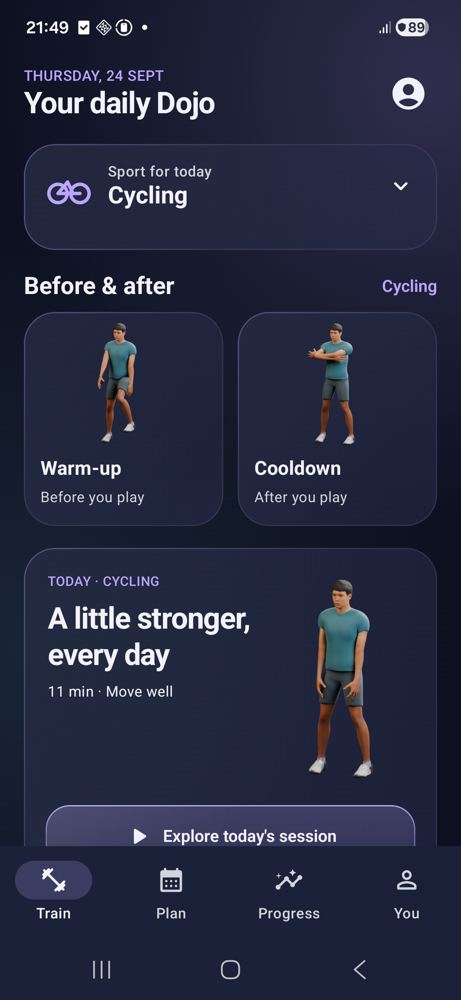
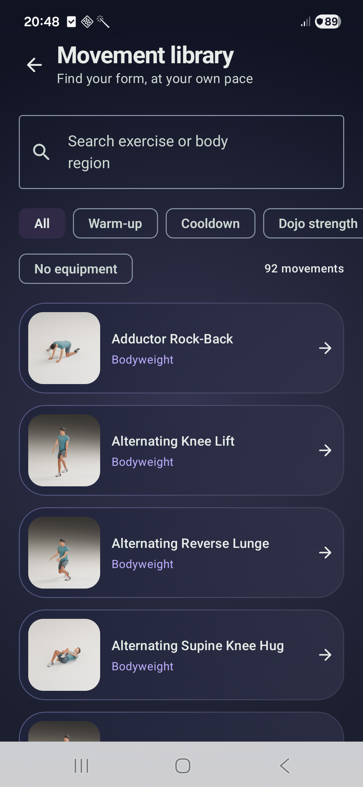

Before and after
Explore sport-tailored warm-ups, cooldowns, Dojo Mode routines and general Injury-Risk Reduction exercises.
Offline sport conditioning
Warm up, train and cool down with practical conditioning for 14 sports. Follow exercise demonstrations and build your own weekly rhythm.
Android 8.0 and later · Adults aged 18 and over
No account. No ads. Works offline.

Explore sport-tailored warm-ups, cooldowns, Dojo Mode routines and general Injury-Risk Reduction exercises.
Browse 92 exercises with male and female demonstrations. Pause, replay or slow the guidance to follow at your own pace.
Edit training and rest days, resume paused sessions and review your history. Your profile and activity stay on your device.
Every sport has a complete route using bodyweight and clear floor space. Resistance-band exercises are optional.
Swimming guidance is dry-land only; Cycling guidance is off-bike only. Cricket and Baseball roles adjust broad conditioning priorities rather than teach technique or prescribe throwing, bowling or pitching workloads.

SportDOJO is intended for generally healthy adults aged 18 or older. Complete the readiness check before each session. Stop if you experience pain or other concerning symptoms and seek appropriate professional help.
Injury-Risk Reduction exercises are not injury treatment or rehabilitation, and no result is guaranteed.
This app is not a medical device and does not diagnose, treat, cure or prevent any medical condition. Consult a qualified healthcare professional for medical advice, diagnosis or treatment.